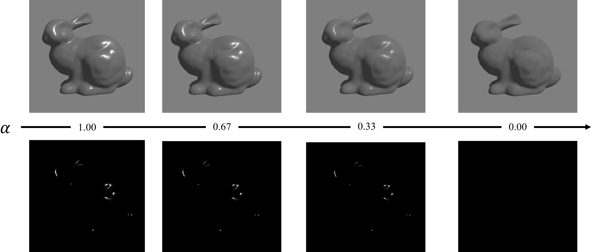
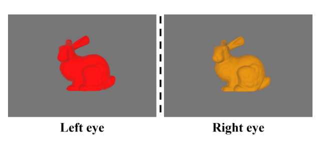
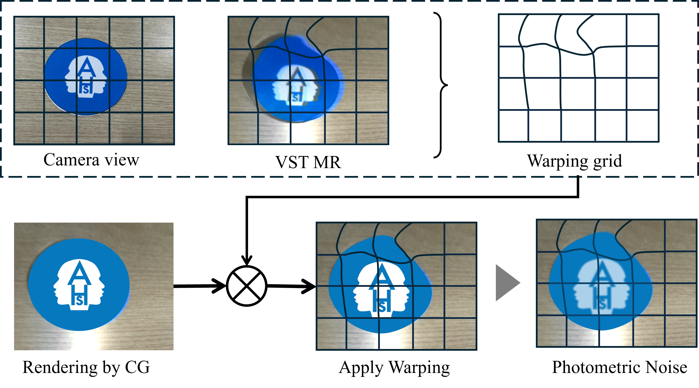
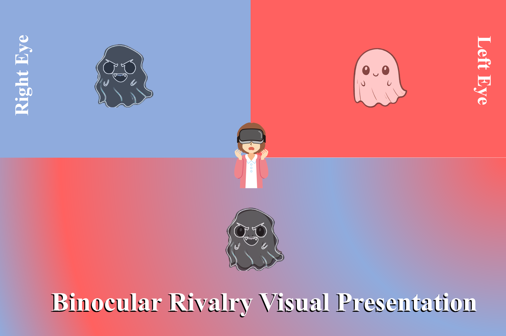
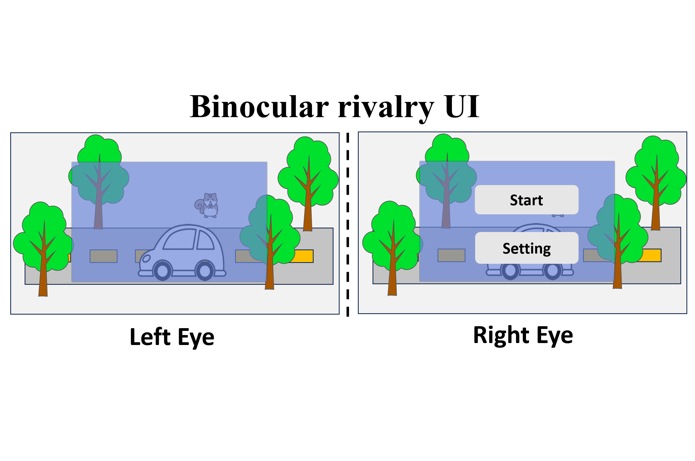
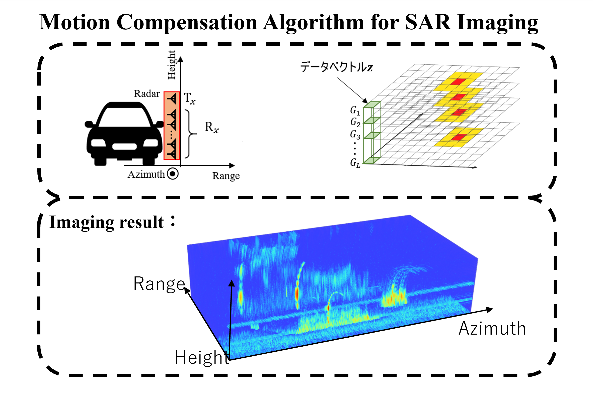

Gloss Perception in VR at Long Viewing Distances: Effects of Binocular Highlight Intensity Asymmetry
K. Guo, J. Hosoi, Y. Shimomura, Y. Ban, and S. Warisawa
IEEE Transactions on Visualization and Computer Graphics (TVCG), 2026.
PhD Candidate @ UTokyo
東京大学 博士後期課程
东京大学 博士生
I am a PhD candidate at the University of Tokyo (UTokyo), HeiLab, advised by Prof. Shin'ichi Warisawa and Prof. Yuki Ban. My research focuses on binocular rivalry and its applications in HCI and visual effects.
東京大学 割澤・伴研究室（HeiLab）の博士後期課程に在籍しています．割澤伸一教授と伴祐樹准教授の指導のもと，両眼視野闘争とそのHCI・視覚効果への応用を研究しています．
我是东京大学割泽·伴研究室（HeiLab）的博士生，导师为割泽伸一教授和伴祐树副教授。我的研究聚焦于双眼竞争及其在人机交互和视觉特效中的应用。

K. Guo, J. Hosoi, Y. Shimomura, Y. Ban, and S. Warisawa
IEEE Transactions on Visualization and Computer Graphics (TVCG), 2026.

K. Guo, J. Hosoi, Y. Shimomura, Y. Ban, and S. Warisawa
IEEE Transactions on Visualization and Computer Graphics (TVCG), 2025.

K. Guo, J. Hu, D. Jin, S. Warisawa, and Y. Ban
Augmented Humans International Conference (AHs) 2026.
K. Guo, J. Hosoi, Y. Ban, S. Warisawa et al.
IEEE VR 2025 Abstracts and Workshops (VRW).

K. Guo, J. Hosoi, Y. Ban, Y. Shimomura, and S. Warisawa
SIGGRAPH Asia 2024 Emerging Technologies.

K. Guo, Y. Shimomura, J. Hosoi, Y. Ban, and S. Warisawa
Augmented Humans International Conference (AHs) 2024.
J. Hu, K. Guo, Z. Kang, Y. Ban, and S. Warisawa
IEEE VR 2026.
R. Nagata, K. Guo, S. Warisawa, and Y. Ban
Augmented Humans International Conference (AHs) 2026, Poster. (accepted, to appear)

Developed a GPS/INS-aided algorithm for automotive mmWave SAR imaging, achieving ~4cm resolution at 15km/h.
Reallocation of Body Ownership in Third-Person Perspective VR: An Investigation of Influencing Factors
Kagi Ko, Kai Guo, Zhongrui Kang, Yuki Ban, and Shin'ichi Warisawa
The 30th Virtual Reality Society of Japan Annual Conference (VRSJ 2025), 3F2-02, 2025.
Inducing Meditation through Dynamic Presentation of Visual and Auditory Stimuli under a Slow Breathing
Ren Nagata, Kai Guo, Yuki Ban, and Shin'ichi Warisawa
The 30th Virtual Reality Society of Japan Annual Conference (VRSJ 2025), 3G-17, 2025.
三人称視点VRにおける身体所有感に基づく全身振動提示手法
Kagi Ko, Kai Guo, Zhongrui Kang, Yuki Ban, and Shin'ichi Warisawa
The 26th SICE System Integration Division Annual Conference (SI 2025), 2025.
VR環境におけるレンダリングスタイルが両眼ハイライト視差と光沢知覚に及ぼす影響
Kai Guo, Juraku Hosoi, Yuki Ban, Yuki Shimomura, and Shin'ichi Warisawa
The 26th SICE System Integration Division Annual Conference (SI 2025), 2025.
Visual Presentation Methods for Supernatural Effects through Binocular Rivalry
Kai Guo, Juro Hosoi, Yuki Ban, Yuki Shimomura, and Shin'ichi Warisawa
The 29th Virtual Reality Society of Japan Annual Conference (VRSJ 2024), 2E1-02, 2024.
Focus: Binocular rivalry, UI design, Visual Effects. 研究テーマ：両眼視野闘争のUI・視覚効果への応用。 研究方向：双眼竞争及其在UI设计和视觉特效中的应用。
Thesis: GUI Presentation Method based on Binocular Rivalry for Non-overlay Information Recognition in Visual Scenes 修士論文：視野闘争を用いた視覚シーンと重畳しない情報認識のためのGUI提示手法 硕士论文：基于双眼竞争的视觉场景非重叠信息识别GUI呈现方法
Thesis: Basic Study on Motion Compensation in Carbon Millimeter Wave SAR by Using Range Doppler Method 卒業論文：レンジドップラー法を用いたカーボンミリ波SARにおける運動補償の基礎研究 毕业论文：基于距离多普勒法的碳毫米波SAR运动补偿基础研究